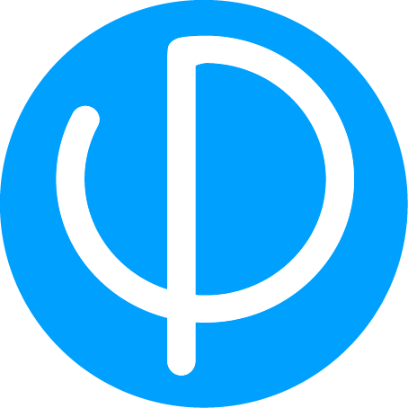

01
BookVerse
A cloud-native RAG service pairing FastAPI, an LLM, and a vector store to answer questions over large book and document collections with citation-backed responses.
4+ years building scalable APIs, microservices, and Kafka-driven systems in Java, Spring Boot, Python, and FastAPI — plus GenAI features that ship to production and stay predictable under load.
From 1,000-QPS REST APIs to event-driven pipelines and RAG platforms, I focus on predictable latency, clear observability, and architectures teams can trust without second-guessing.
I'm drawn to messy systems — not for the chaos, but for the chance to find the signal inside the noise. From migrating workloads to AWS at Salesforce to building Kafka-backed event pipelines and citation-grounded RAG services, I stitch together APIs, data, and LLMs so complex systems feel simple to the people who depend on them.


A cloud-native RAG service pairing FastAPI, an LLM, and a vector store to answer questions over large book and document collections with citation-backed responses.
A course delivery platform with role-based access, assessment workflows, and AI-assisted summarization — built around a Python backend and a relational content model.
A containerized YOLO inference service deployed to AWS, exposing detection over a REST endpoint with reproducible Docker builds and horizontal scaling.
Infrastructure-as-code for a full cloud environment — networking, managed instances, and CI/CD wiring — provisioned from scratch with Terraform and Packer images.
HTTP ETag generation and conditional-request handling backed by Redis, cutting redundant payload transfer by returning 304s when resource state is unchanged.
An event-driven onboarding pipeline: new-hire events fan out over Kafka to trigger welcome emails, account provisioning, and training assignments, with retry and replay on every consumer.
A lightweight calendar app that computes and surfaces Ekadashi dates by location, with a simple API and a mobile-first interface.
Notes on backend systems, event-driven architecture, and building with LLMs.
SEE ALL POSTS →Have a backend or GenAI system to build, or a role to fill? I'd love to hear about it. Based in San Francisco, open to remote.